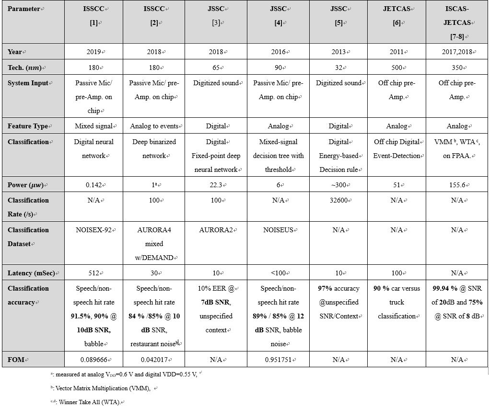

|
竞赛题目：基于类脑电路的语音活动检测器（VAD）芯片设计
在本题目中，请参赛选手基于混合信号电路或者FPGA开发板实现一个类脑语音活动检测器。参赛选手如果设计混合信号芯片来实现可采用开源CMOS PDK(链接地址)或者自己的PDK（使用何种PDK不影响最后得分）；如果用FPGA实现，请使用PynQ Z-1 开发板 (基于Xilinx Zynq 7020)，最终决赛将使用该开发板进行现场演示。 比赛要求使用的数据库(链接地址)。 在过去几年中，语音活动检测器（VAD）已成为实现基于语音的通信接口的更具吸引力的候选者，因为它作为语音唤醒电路，看门狗，用于声学传感器节点（ASN）等多种应用，自动语音识别（ASR），以及智能入耳设备。 VAD的主要职责是在不同的嘈杂环境中检测人类语音的存在与否。这意味着，它正在运行“Always On”，而其他电路处于休眠模式，直到释放触发信号作为电源门控信号。对于室内大多数基于语音的命令接口，实现在嘈杂环境中运行的VAD-On芯片，信噪比（SANR）从0 dB到10 dB是非常必要的，并且在功耗和语音/非语音命中率的折中与权衡已成为强制性的。因此，已经开发了大量努力来在不同场景中实现VAD：全数字IC实现，混合信号处理（MSP）和全模拟信号处理（ASP）。数字IC实现被广泛使用并且比MSP和ASP更受欢迎以实现高灵活性和准确性，但它以8至14比特内的低分辨率的消耗功率，面积和成本为代价。因此，MSP和ASP都是在低分辨率下在功率和面积效率之间进行折衷的优选方案。 参赛选手可以参考以下文献资料：
|  |
报名阶段
在官网上报名，按要求填写相关内容，包括成员信息、题目和选题摘要等。
初赛阶段
需提交电路设计源文件（混合信号方向）或源代码（FPGA方向）以及testbench和技术文档。技术文档至少应包括如下内容：
通过仿真说明所设计的VAD电路实现的基本功能，包括（但不限于）：
系统框图和电路原理图及其说明与分析
仿真结果
准确性、延迟、功耗等性能指标
展示所设计电路的准确性和延迟的优越性。
决赛阶段
各参赛队需提交进一步完善的电路设计源文件或源代码以及testbench和技术文档，并进行现场海报及FPGA展示和PPT答辩。决赛阶段由专家组进行评审，依据作品展示、现场报告和技术文档进行现场打分。
参考文献
[1] M. Cho, S. Oh, Z. Shi, J. Lim, Y. Kim, S. Jeong, Y. Chen, D. Blaauw, H. Kim,D. Sylvester “A 142nW Voice and Acoustic Activity Detection Chip for mm-Scale Sensor Nodes Using Time-Interleaved MixerBased Frequency Scanning” IEEE International Solid- State Circuits Conference, pp.278-280, 2019.
[2] M. Yang, C. Yeh, Y. Zhou, J. P. Cerqueira, A. A. Lazar, M. Seok , “A 1μW Voice Activity Detector Using Analog Feature Extraction and Digital Deep Neural Network,” IEEE International Solid - State Circuits Conference, pp. 346 – 348, 2018.
[3] M. Price, J. Glass, and A P. Chandrakasan, “A Low-Power Speech Recognizer and Voice Activity Detector Using Deep Neural Networks” IEEE Journal of solid-state circuits, vol. 53, no.1,2018.
[4] K. M. H. Badami, S. Lauwereins, W. Meert, and M. Verhelst, “A 90 nm CMOS, 6µW Power-Proportional Acoustic Sensing Frontend for Voice Activity Detection,” IEEE Journal of Solid-State Circuits, vol. 51, no. 1, pp.291-302, 2016.
[5] A. Raychowdhury, C. Tokunaga, W. Beltman, M. Deisher, J. W. Tschanz, and V. De, “A 2.3 nJ/Frame Voice Activity Detector-Based Audio Front-End for Context-Aware System-On-Chip Applications in 32-nm CMOS,” IEEE Journal Of Solid-State Circuits, vol. 48, no. 8,pp. 1963 -1969 , 2013.
[6] B. Rumberg, D.W.Graham, V.Kulathumani, and R. Fernandez, “Hibernets: Energy-efficient sensor networks using analog signal processing,” IEEE Journal on Emerging and Selected Topics in Circuits and Systems, vol. 1, no. 3, pp. 321–334, Sep. 2011.
[7] S. Shah and J. Hasler, “Low Power Speech Detector on A FPAA,” IEEE International Symposium on Circuits and Systems, pp.1-4,2017.
[8] J. Hasler , and S. Shah, “VMM + WTA Embedded Classifiers Learning Algorithm Implementable on SoC FPAA Devices,” IEEE Journal On Emerging and Selected topics in circuits and systems, vol. 8, no. 1, pp. 65-76,2018.